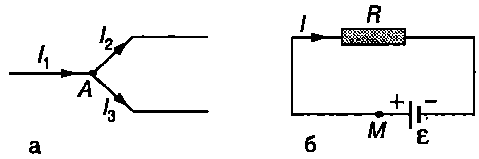
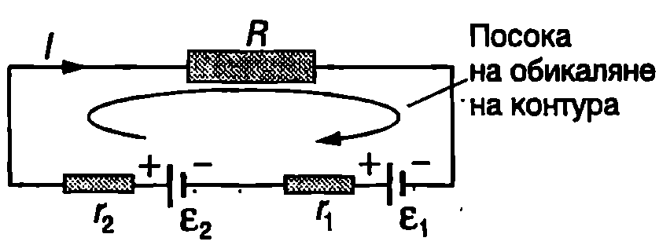
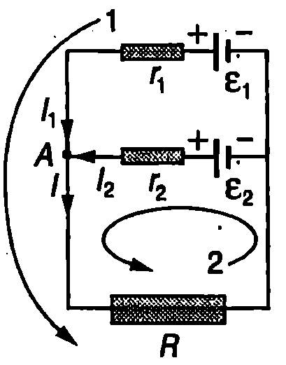
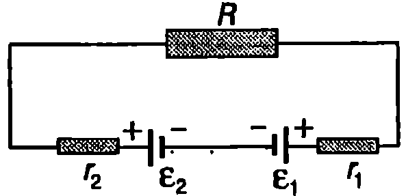
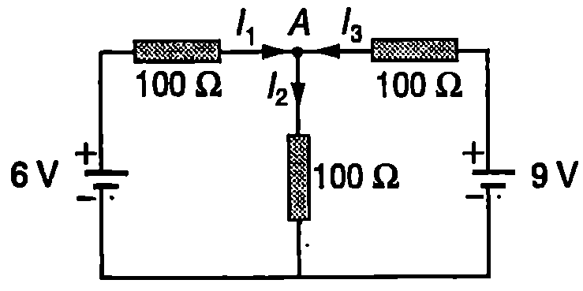
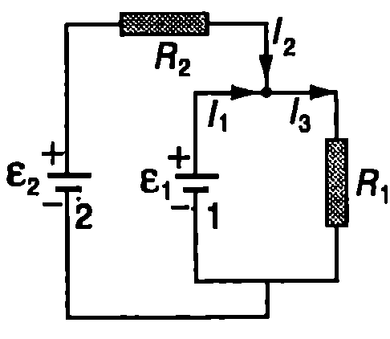
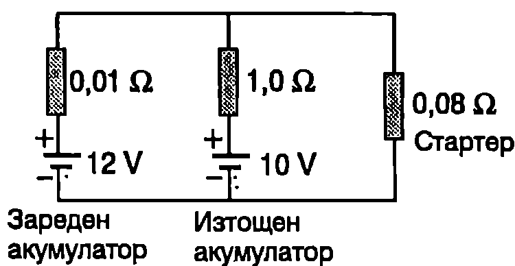
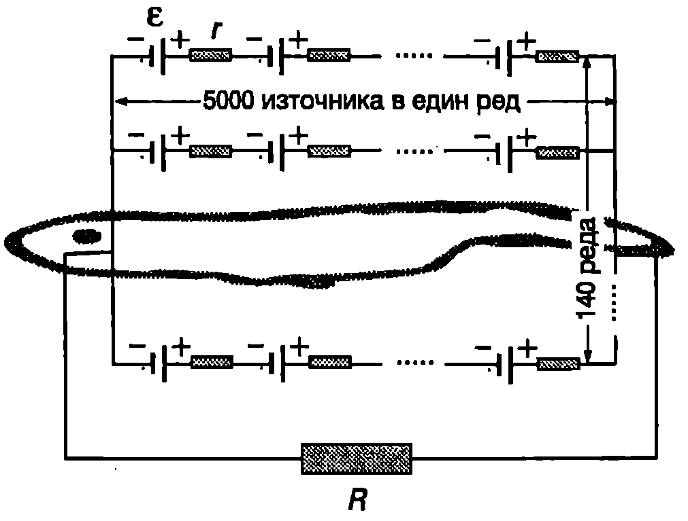

Токът и падовете на напрежението върху резисторите в прости електрически вериги могат да се определят с помощта на закона на Ом и правилата за комбинации от последователно и успоредно свързани резистори. При анализа на по-сложни вериги се използват още две правила, носещи името на германския физик Густав Роберт Кирхоф (1824-1887).
1. Правило за възловата точка: Сумата от токовете, които влизат в даде на възлова точка от една разклонена електрическа верига, е равна на сумата от токовете, излизащи от същата точка.
2. Правило за контура: Алгебричната сума от падовете на напрежението на всички участъци от затворен токов контур е равна на алгебричната сума от електродвижещите напрежения на всички източници на електрична енергия, включени В този контур.
Възлови се наричат точките, в които се разклонява една електрическа верига. Възлова е например точка от Фиг. \ref{fig:60.1}а. Токът е насочен към точка и внася в нея електричен заряд. Токовете и излизат от точка и изнасят от нея електричен заряд. Тъй като в точка не могат нито да се натрупват, нито да изчезват електрични заряди, трябва внесеният за единица време в точка електричен заряд да е равен на изнесения от нея за същото време заряд, т.е. в сила е равенството
Следователно правилото на Кирхоф за възловата точка е следствие от закона за запазване на електричния заряд.
\begin{figure}[h!] \centering  \caption{} \label{fig:60.1} \end{figure}
Второто правило на Кирхоф е следствие от закона за запазване на енергията. Действително, да разгледаме например най-прост токов контур, съставен само от един източник с ЕДН и резистор със съпротивление , в който тече ток (Фиг. \ref{fig:60.1}б). Електричен заряд тръгва от точка и прави една пълна обиколка на контура. Когато зарядът премине през резистора, електричната му потенциална енергия намалява с , където е падът на напрежението върху резистора: в резистора се отделя топлина. При преминаване през източника електродвижещите сили извършват положителна работа и възстановяват потенциалната енергия на заряда. От закона за запазване на енергията следва, че или . Равенството изразява правилото на Кирхоф за токовия контур.
Прилагането на правилата на Кирхоф се извършва в следната последователност:
-
Начертава се схема на електрическата верига, определят се възловите точки и контурите, които ще се използват. Избират се посоки на обикаляне на контурите и предполагаеми посоки на токовете.
-
Ако при преминаване през резистор със съпротивление посоката на обикаляне на контура съвпада с посоката на тока през резистора, падът на напрежението върху резистора се приема за положителен. Ако посоката на обикаляне на контура е противоположна на посоката на тока, падът на напрежението върху резистора е отрицателен ().
-
Ако при обикалянето на контура се преминава от отрицателния към положителния полюс на източник, неговото електродвижещо напрежение се приема за положително, а при преминаване от положителния към отрицателния полюс ЕДН се взема със знак минус ().
-
Ако след извършване на числените пресмятания за някой от токовете се получи отрицателна числена стойност, това означава, че действителната посока на този ток е противоположна на първоначално избраната от нас предполагаема посока на тока. (В такъв случай трябва само да сменим посоката на този ток — всички останали резултати остават в сила.)
Следващите примери илюстрират прилагането на правилата на Кирхоф за анализ на електрическите вериги.
Пример 60.1
Последователно свързване на източници на ЕДН. Електрическа верига е съставена от два източника с електродвижещо напрежение и и вътрешно съпротивление съответно и , които са свързани последователно, и от резистор (консуматор) със съпротивление . Определете тока във веригата. \end{psexample}
Решение
Схемата на електрическата верига е показана на Фиг. \ref{fig:60.2}. В случая електрическата верига е проста, съставена само от един токов контур. Във външната част на веригата токът тече от положителния към отрицателния полюс на източниците. Избираме посоката на обикаляне на контура да съвпада с посоката на тока и прилагаме правилото на Кирхоф за токовия контур: откъдето определяме тока във веригата:
От получения резултат и от закона на Ом за цялата верига следва изводът, че два последователно свързани източника са еквивалентни на един източник с ЕДН и вътрешно съпротивление . Такова свързване се използва, когато е необходимо по-голямо електродвижещо напрежение.
\begin{figure}[h!] \centering  \caption{} \label{fig:60.2} \end{figure}
Пример 60.2
Успоредно свързване на източници на ЕДН. Двата източника в електрическата верига, показана на Фиг. \ref{fig:60.3}, са свързани успоредно. Определете тока през резистора със съпротивление . \end{psexample}
Решение
Ще приложим правилата на Кирхоф за възловата точка и контурите 1 и 2. Посоките на токовете и посоките на обикаляне на двата контура са показани на Фиг. \ref{fig:60.3}.
\begin{figure}[h!] \centering  \caption{} \label{fig:60.3} \end{figure}
За възловата точка :
За контура 1:
За контура 2:
От последните изрази изразяваме токовете и , ги заместваме в уравнението и след необходимите алгебрични преобразувания определяме тока през резистора със съпротивление : Ако двата източника са еднакви (, ), за тока се получава: От получения резултат и от закона на Ом за цялата верига следва изводът, че два успоредно свързани еднакви източника са еквивалентни на един източник със същото ЕДН, но с два пъти по-малко вътрешно съпротивление (). Такова свързване се използва, когато е необходим по-голям ток.
Пример 60.3
Определете токовете, които текат в електрическата верига от Фиг. \ref{fig:60.4}. Вътрешното съпротивление на източниците се пренебрегва. Направете числени пресмятания за , , и . \end{psexample}
Решение
Неизвестните токове са три. За определянето им са необходими три уравнения, които могат да се съставят с помощта на правилата на Кирхоф: например за възловата точка и за контурите 1 и 2 (Фиг. \ref{fig:60.4}). Избираме предполагаеми посоки на токовете и посока на обикаляне на контурите.
За възловата точка :
За контура 1:
За контура 2:
Решаваме получената система от линейни уравнения с три неизвестни и получаваме:
\begin{figure}[h!]
\centering
 \caption{}
\label{fig:60.4}
\end{figure}
\caption{}
\label{fig:60.4}
\end{figure}
Заместваме с дадените в условието числени стойности и пресмятаме токовете: Получената отрицателна стойност за тока показва, че действителната посока на този ток е противоположна на избраната предполагаема посока. Всички останали резултати (числените стойности на токовете) остават в сила.
Задачи
- Пресметнете тока в електрическата верига, показана на Фиг. \ref{fig:60.5}, ако , , , ,
\begin{figure}[h!] \centering  \caption{} \label{fig:60.5} \end{figure}
- Определете токовете в електрическата верига, показана на Фиг. \ref{fig:60.6}.
\begin{figure}[h!] \centering  \caption{} \label{fig:60.6} \end{figure}
- Определете токовете в електрическата верига, показана на Фиг. \ref{fig:60.7}. Вътрешното съпротивление на източниците се пренебрегва. При какво условие падът на напрежението върху резистора със съпротивление е равен на електродвижещото напрежение на първия източник? Ако от източника 2 може да се черпи голям ток, а 1 е маломощен еталонен източник с точно зададено ЕДН, за каква цел може да се използва тази схема?
\begin{figure}[h!] \centering  \caption{} \label{fig:60.7} \end{figure}
- Изтощен автомобилен акумулатор се зарежда от акумулатора на друга кола (Фиг. \ref{fig:60.8}). Определете токовете, които текат през стартера и през изтощения акумулатор.
\begin{figure}[h!] \centering  \caption{} \label{fig:60.8} \end{figure}
- Електрическата змиорка (Electrophorus electricus), обитаваща реките на Южна Америка, убива рибата, с която се храни, с електрични импулси. Електричните органи на змиорката са биологични клетки, които са физиологични източници на ЕДН с вътрешно съпротивление . Източниците са подредени в 140 реда, като всеки ред съдържа по 5000 еднакви източника (Фиг. \ref{fig:60.9}).
а) Определете електродвижещото напрежение между главата и опашката на змиорката.
б) Еквивалентното съпротивление на водата около змиорката е . Определете тока, който тече между главата и опашката на змиорката.
в) Определете тока, който тече през всеки клон от веригата на Фиг. \ref{fig:60.9}.
Указание. на брой еднакви, успоредно свързани източника с ЕДН и вътрешно съпротивление , са еквивалентни на един източник със същото ЕДН и пъти по-малко вътрешно съпротивление ().
\begin{figure}[h!] \centering  \caption{} \label{fig:60.9} \end{figure}